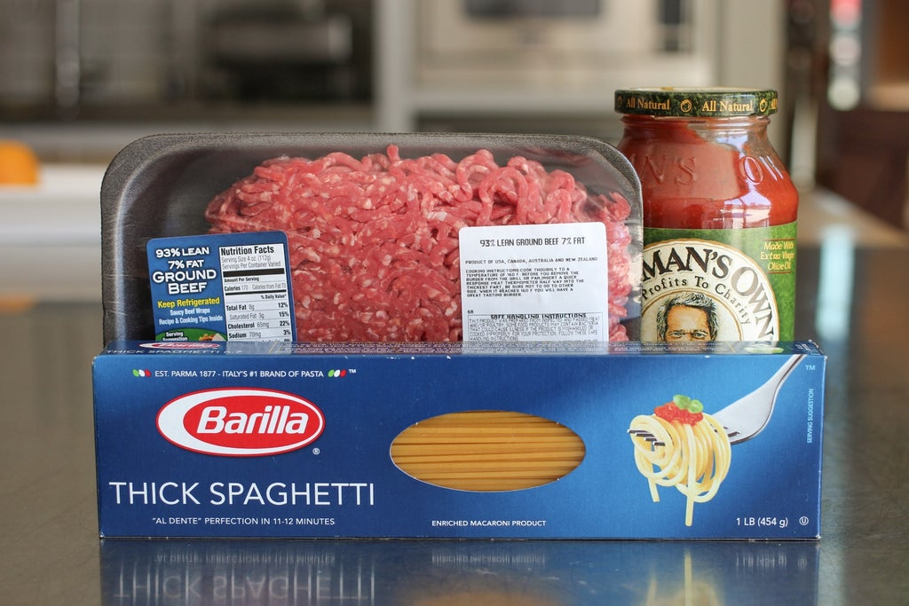
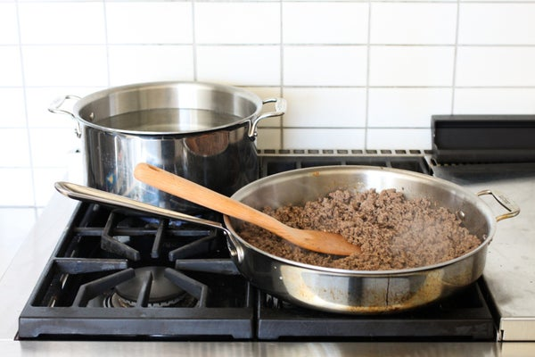
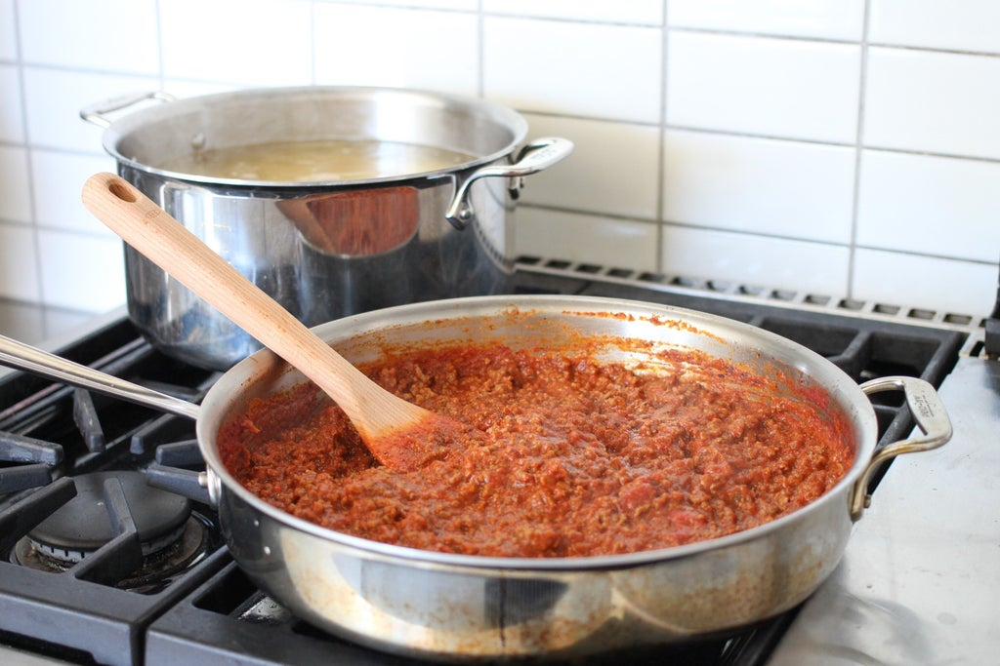
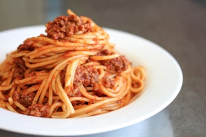

How To Make Sphagetti
Step 1: Get Your Supplies
Before you can start making your spaghetti you will need to first get the proper supplies and materials. To make this spaghetti you will need are: a box of spaghettia jar of marinara sauce, 1-2 pounds of ground beef or Italian sausage, two large pots, one for boiling the pasta and the other for making the sauceserving untensils, salt and water. You can use as much meat as you want, really - but anywhere from 1-2 pounds per large jar of sauce should work out best. I tend to use 1 pound of meat nearly every time.
Step 2: Cooking the Meat + Get the Water Boiling
Before you start, fill up a large pot with water and add a handful of salt. Put it on the stove and turn it to high so it'll start boiling! Next you will need to cook the of meat. Take all of the meat out of its container and set it all in a large pan, then put the pan on the stove and set the stove to medium.
Step 3: Mixing in the Sauce
Next you will need to mix your marinara sauce with your cooked meat. Take your jar of marinara sauce and pour all of it on the cooked meat and then stir it all around until it is all blended together. Then turn the heat down to low and let it simmer while you cook the pasta.
Step 4: Cooking the Spaghetti

Once the water has come up to a boil, you can throw the spaghetti in. Typically it should cook within 7-11 minutes - just follow the time on the box!
Make sure to stir every couple minutes to keep it from sticking.
Depending on
your timing, you can either strain the spaghetti and set it aside, or you can put it right into the sauce.
Step 5: Serving Your Spaghetti
You can do this in a lot of ways but I prefer mixing the noodles in the pan with the sauce. I use tongs to drain the noodles and place them in the sauce, and then put in a couple spoons of pasta water. Stir it all together really well - the pasta water coats all the noodles and lets the sauce stick more. You can also put plain spaghetti on individual plates and spoon the sauce over top. Whatever works for you.